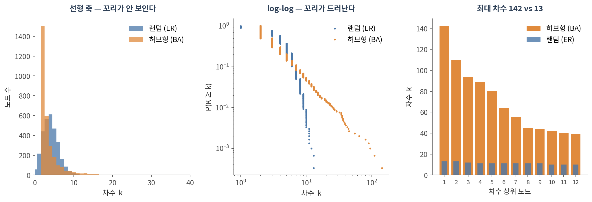
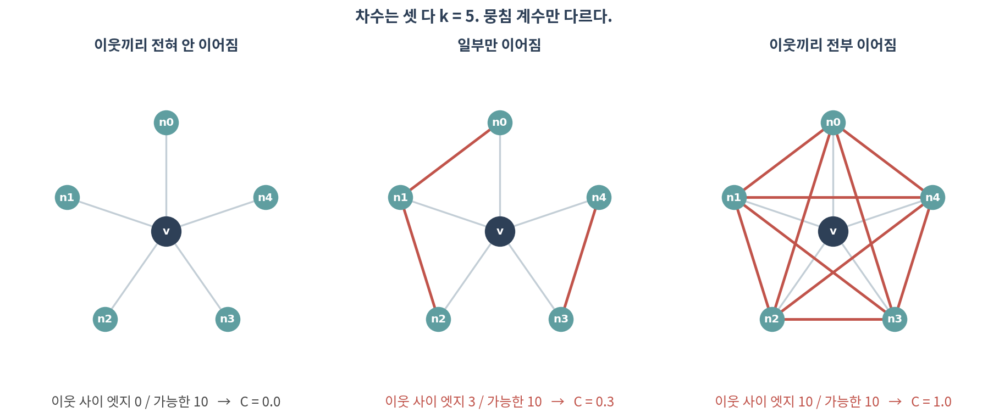
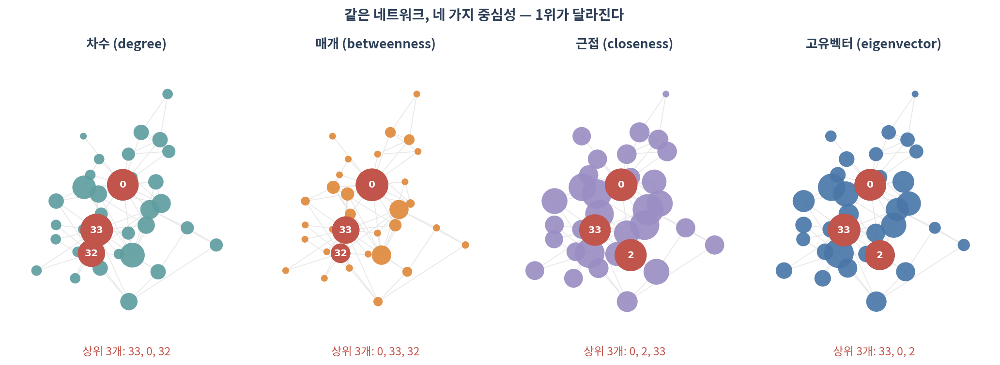

03. 네트워크 정량화와 중심성
이 챕터를 마치면 다음을 할 수 있습니다.
- 차수 분포를 그리고, ⚠️ 왜 선형 축이 아니라 log-log로 봐야 하는지 말할 수 있다
- ⚠️ “생물학 네트워크는 scale-free”라는 주장이 왜 과장인지 설명할 수 있다
- 평균 경로 길이·지름·뭉침 계수를 계산하고 해석할 수 있다
- 중심성 다섯 가지가 각각 무엇을 재는지 구분할 수 있다
- ⚠️ hub과 bottleneck이 왜 다른 유전자인지, 논문에 쓸 때 무엇을 밝혀야 하는지 말할 수 있다
🤔 생각해볼 질문
논문에 “TP53은 이 네트워크의 hub 유전자다”라고 씁니다. 어느 지표로 hub인가요? 지표를 바꾸면 순위가 그대로일까요?
1. 차수 분포 📊
1) 차수와 그 분포
- 차수(degree) k — 한 노드에 붙은 엣지 수 (🔗 02 §2.3)
- 차수 분포 P(k) — 차수가 k인 노드의 비율. 네트워크 전체의 성격을 한 장으로 보여주는 요약
💡 평균 차수 하나만 보고하는 것은 거의 쓸모가 없습니다. 평균이 같아도 분포는 전혀 다를 수 있습니다.
2) 왜 log-log인가

| 랜덤 (ER) | 허브형 (BA) | |
|---|---|---|
| 평균 차수 | 4.00 | 4.00 |
| 중앙값 | 4 | 2 |
| 최대 차수 | 13 | 142 |
| 평균 뭉침 계수 | 0.0011 | 0.0101 |
- ⚠️ 평균은 같습니다. 그런데 최대 차수는 11배 차이 납니다
- 선형 축에서는 꼬리에 있는 노드가 몇 개뿐이라 보이지 않습니다
- ✅ 그래서 log-log로, 그리고 히스토그램보다 CCDF(P(K ≥ k))로 그립니다 — 구간 나누기(binning)에 결과가 좌우되지 않습니다
3) ⚠️ “생물학 네트워크는 scale-free”는 과장이다
2000년대 초 “PPI 네트워크는 scale-free이고, 따라서 허브가 필수적이다”라는 서사가 널리 퍼졌습니다.
⚠️ 그런데:
- Broido와 Clauset(2019)은 실제 네트워크 약 1,000개를 통계적으로 검정해, 강한 의미의 scale-free는 드물다고 보고했습니다
- log-log에서 직선처럼 보이는 것은 증거가 아닙니다. 로그 축에서는 여러 분포가 직선처럼 보입니다
- PPI의 꼬리는 상당 부분 연구 편향 때문일 수 있습니다 — 많이 연구된 단백질에 엣지가 많이 달립니다(🔗 07)
✅ 실무적으로 할 일:
- “꼬리가 두껍다”, “차수가 매우 불균등하다”까지는 말해도 됩니다
- “scale-free이므로 ⋯”라는 인과 서사는 쓰지 마세요
- 분포를 주장하려면
powerlaw같은 패키지로 대안 분포(log-normal 등)와 비교 검정해야 합니다
2. 거리와 뭉침 📏
1) 최단경로, 지름, 평균 경로 길이
- 최단경로(shortest path) — 두 노드를 잇는 가장 짧은 엣지 열
- 거리(distance) — 그 최단경로의 엣지 수
- 지름(diameter) — 모든 쌍의 거리 중 최댓값
- 평균 경로 길이 — 모든 쌍 거리의 평균
⚠️ 주의할 점:
- 연결되지 않은 쌍은 거리가 무한대입니다 → 거대 요소 안에서만 계산합니다(🔗 02 §3.1)
- 지름은 가장 극단적인 한 쌍이 정하므로 잡음에 약합니다. 평균 경로 길이를 함께 보고하세요
- 모든 쌍 최단경로는 O(n·m) 이라 큰 네트워크에서는 무겁습니다 → 표본 추출로 근사합니다
2) 뭉침 계수
뭉침 계수 C — “내 이웃끼리도 서로 이웃인가”

- 차수 k인 노드의 이웃 쌍은 최대 k(k−1)/2개 → 그중 실제로 이어진 비율이 C
- 💡 분모를 전체 노드 수가 아니라 이웃의 최대치로 잡는 것이 핵심입니다. 실제 네트워크는 sparse해서 전체 대비로는 모든 값이 0에 가까워집니다
두 가지가 흔히 혼동됩니다.
- 평균 뭉침 계수 — 노드별 C를 구해 평균. 차수가 작은 노드도 한 표를 행사
- Transitivity(전역 뭉침 계수) — 전체 삼각형 수 ÷ 전체 삼각형 후보 수. 차수가 큰 노드가 더 큰 영향
Zachary karate club에서:
- 평균 C = 0.571
- Transitivity = 0.256
→ 두 배 이상 차이 납니다. ✅ 어느 쪽을 썼는지 반드시 밝히세요. nx.average_clustering()과 nx.transitivity()는 다른 함수입니다.
3) Small-world
- Small-world = 평균 경로가 짧으면서 뭉침이 높은 성질
- 랜덤 네트워크는 경로는 짧지만 뭉침이 낮고, 격자는 뭉침이 높지만 경로가 깁니다
- 실제 생물학 네트워크는 대체로 둘 다 만족합니다
- ⚠️ 하지만 “small-world다”는 null model과 비교해야 나오는 판정입니다. 04에서 실제로 검정합니다
3. 중심성 — 허브는 하나가 아니다 🎯
1) 다섯 가지
| 중심성 | 재는 것 | 한 줄 직관 | 생물학적 해석 |
|---|---|---|---|
| 차수 | 이웃 수 | 아는 사람이 많다 | hub 유전자 |
| 매개(betweenness) | 최단경로가 나를 지나는 비율 | 내가 빠지면 길이 끊긴다 | bottleneck — 모듈 사이 중개자 |
| 근접(closeness) | 전체와의 평균 거리의 역수 | 어디든 빨리 닿는다 | 빠른 전파 위치 |
| 고유벡터 | 중요한 이웃과 연결된 정도 | 중요한 사람을 안다 | 핵심 코어 소속 |
| PageRank | 고유벡터 + 랜덤 점프 | 방향이 있어도 계산된다 | 방향 네트워크용, 막다른 길 처리 |

Zachary karate club에서 상위 3개:
| 중심성 | 1위 | 2위 | 3위 |
|---|---|---|---|
| 차수 | 33 | 0 | 32 |
| 매개 | 0 | 33 | 32 |
| 근접 | 0 | 2 | 33 |
| 고유벡터 | 33 | 0 | 2 |
| PageRank | 33 | 0 | 32 |
- ⚠️ 1위가 지표마다 바뀝니다. 차수로는 33번, 매개로는 0번이 1위입니다
- 근접에서는 차수 순위에 없던 2번이 올라옵니다 — 이웃은 적지만 위치가 중앙입니다
2) ⚠️ Hub과 bottleneck은 다른 유전자다
- Hub = 차수가 큰 노드. 한 모듈 안에서 많은 상대와 접촉
- Bottleneck = 매개 중심성이 큰 노드. 모듈과 모듈 사이를 잇는 자리
💡 둘은 겹칠 수도, 완전히 다를 수도 있습니다. 차수가 3인데 두 모듈 사이의 유일한 통로라면, hub은 아니지만 강력한 bottleneck입니다.
- Yu 등(2007)은 효모 네트워크에서 betweenness가 높은 bottleneck 단백질이 차수와 무관하게 필수 유전자와 상관된다고 보고했습니다
- → 표적 후보를 고를 때 차수만 보면 이런 단백질을 놓칩니다
✅ 논문에 쓸 때: “hub gene”이라고만 쓰지 말고 어느 중심성으로 몇 위인지 적으세요. 심사자가 가장 먼저 묻는 질문입니다.
3) 그 밖에 알아둘 두 가지
- Assortativity(차수 상관) — 차수가 큰 노드끼리 붙는 경향. 값이 음수면 허브가 서로 피하는 구조
- k-core 분해 — 차수가 k 미만인 노드를 반복해서 떼어내며 남는 핵심. 잡음이 많은 네트워크에서 핵심 부분만 보고 싶을 때 유용합니다
4) ⚠️ 중심성을 해석하기 전에
- 중심성은 네트워크가 정확하다는 가정 위에 있습니다. 엣지가 빠져 있으면 순위가 바뀝니다
- ⚠️ PPI에서 차수 상위 유전자는 많이 연구된 유전자와 상당히 겹칩니다 — 07에서 다룹니다
- ⚠️ “이 값이 큰가?”는 null model 없이는 답할 수 없습니다 — 04 전체가 이 이야기입니다
- ✅ 그리고 01의 질문이 여기서도 유효합니다: 임계값을 0.05 바꿔도 상위 10개가 그대로인가?
Colab에서 실행합니다. 설치는 90. Colab 환경 설정 참고.
import numpy as np, pandas as pd, networkx as nx
import matplotlib.pyplot as plt
G = nx.karate_club_graph() # 자기 네트워크로 바꿔도 그대로 돌아갑니다
G = G.subgraph(max(nx.connected_components(G), key=len)).copy() # 거대 요소만
# ── 1. 기본 요약 ─────────────────────────────────────────────────────
print(f"노드 {G.number_of_nodes()}, 엣지 {G.number_of_edges()}")
print(f"평균 경로 {nx.average_shortest_path_length(G):.3f}, "
f"지름 {nx.diameter(G)}")
print(f"평균 C {nx.average_clustering(G):.3f}, "
f"transitivity {nx.transitivity(G):.3f}") # ⚠️ 두 값은 다릅니다
# ── 2. 차수 분포 (log-log CCDF) ──────────────────────────────────────
d = np.array([k for _, k in G.degree()])
x = np.sort(d); ccdf = 1 - np.arange(len(x)) / len(x)
plt.loglog(x, ccdf, "."); plt.xlabel("k"); plt.ylabel("P(K ≥ k)")
# ── 3. 중심성 5종 비교표 ─────────────────────────────────────────────
cent = pd.DataFrame({
"degree": nx.degree_centrality(G),
"betweenness": nx.betweenness_centrality(G),
"closeness": nx.closeness_centrality(G),
"eigenvector": nx.eigenvector_centrality(G, max_iter=1000),
"pagerank": nx.pagerank(G),
})
cent.sort_values("betweenness", ascending=False).head(10)
# 지표끼리 순위가 얼마나 일치하는가 (스피어만)
cent.corr(method="spearman").round(2)
# ── 4. ⚠️ 순위는 얼마나 튼튼한가 — 엣지 10%를 지워보기 ───────────────
rng = np.random.default_rng(0)
edges = list(G.edges())
top10_full = cent["betweenness"].nlargest(10).index
overlap = []
for rep in range(20):
H = G.copy()
drop = rng.choice(len(edges), size=int(0.1 * len(edges)), replace=False)
H.remove_edges_from([edges[i] for i in drop])
H = H.subgraph(max(nx.connected_components(H), key=len)).copy()
bt = pd.Series(nx.betweenness_centrality(H))
overlap.append(len(set(bt.nlargest(10).index) & set(top10_full)))
print(f"엣지 10% 제거 시 상위 10개 중 평균 {np.mean(overlap):.1f}개 유지")확인할 것:
- ⚠️ degree와 betweenness의 스피어만 상관이 얼마나 되는가 — 1에 가깝지 않다면 “hub”이라는 말이 모호합니다
- ⚠️ 엣지 10%만 지워도 상위 10개가 몇 개나 바뀌는가. 절반 이하만 유지된다면 그 순위는 보고할 만한 결과가 아닙니다
nx.eigenvector_centrality가 수렴하지 않으면max_iter를 올리거나eigenvector_centrality_numpy를 쓰세요
📝 요약
- 평균 차수만 보고하는 것은 거의 쓸모가 없습니다 — 평균이 같아도 최대 차수가 11배 차이 날 수 있습니다
- ✅ 차수 분포는 log-log CCDF로 그리세요. 선형 축에서는 꼬리가 보이지 않습니다
- ⚠️ “scale-free이므로 ⋯”라는 서사는 쓰지 마세요. 강한 의미의 scale-free는 실제로 드뭅니다
- 거리·지름·평균 경로 길이는 거대 요소 안에서만 의미가 있습니다
- ⚠️ 평균 뭉침 계수와 transitivity는 다른 값입니다 (karate: 0.571 vs 0.256). 어느 쪽인지 밝히세요
- 중심성 다섯 가지는 서로 다른 것을 잽니다. 1위가 지표마다 바뀝니다
- ⚠️ hub(차수)과 bottleneck(매개)은 다른 유전자이고, bottleneck은 차수와 무관하게 필수성과 관련됩니다
- ✅ “hub gene”이라고만 쓰지 말고 어느 중심성으로 몇 위인지 적으세요
- ⚠️ 어떤 값이 큰지는 null model 없이 답할 수 없습니다 → 04
➕ 더 읽을거리
교과서
Newman M. Networks. 2nd ed. Oxford University Press; 2018. (7장: 중심성)
차수 분포와 scale-free 논쟁
Barabási AL, Albert R. Emergence of scaling in random networks. Science. 1999.
Broido AD, Clauset A. Scale-free networks are rare. Nat Commun. 2019.
Holme P. Rare and everywhere: perspectives on scale-free networks. Nat Commun. 2019. (위 논문에 대한 균형 잡힌 논평)
중심성과 생물학적 의미
Jeong H, Mason SP, Barabási AL, Oltvai ZN. Lethality and centrality in protein networks. Nature. 2001.
Yu H, Kim PM, Sprecher E, Trifonov V, Gerstein M. The importance of bottlenecks in protein networks: correlation with gene essentiality and expression dynamics. PLoS Comput Biol. 2007.